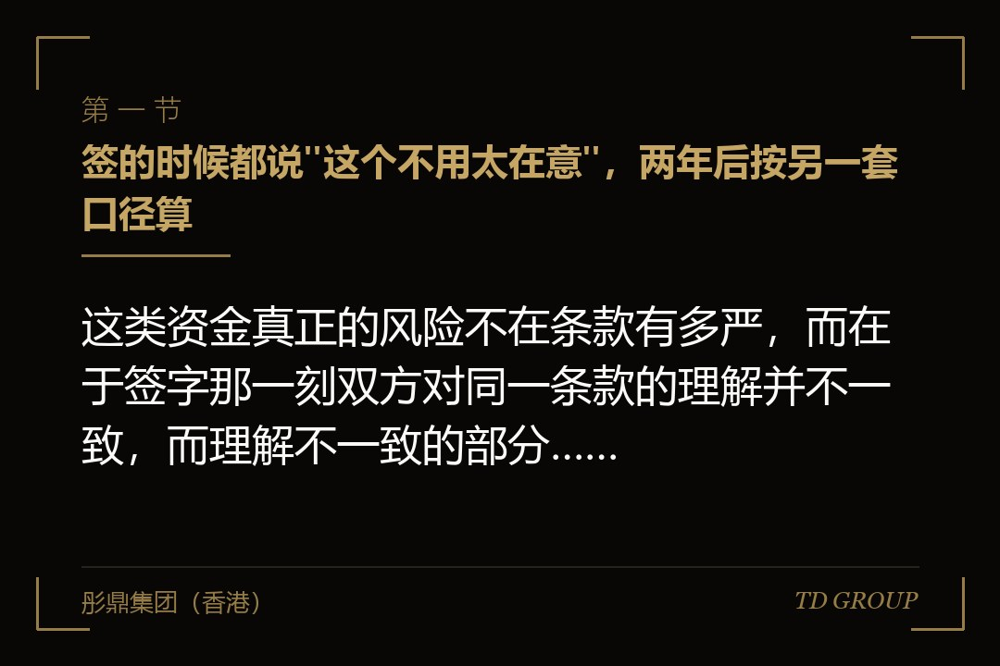
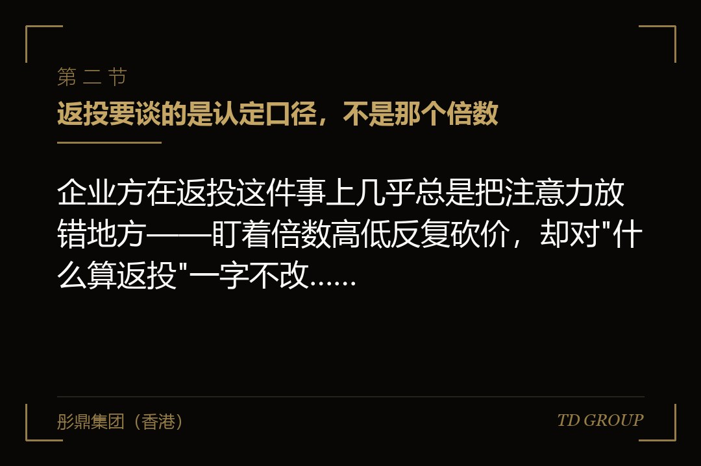
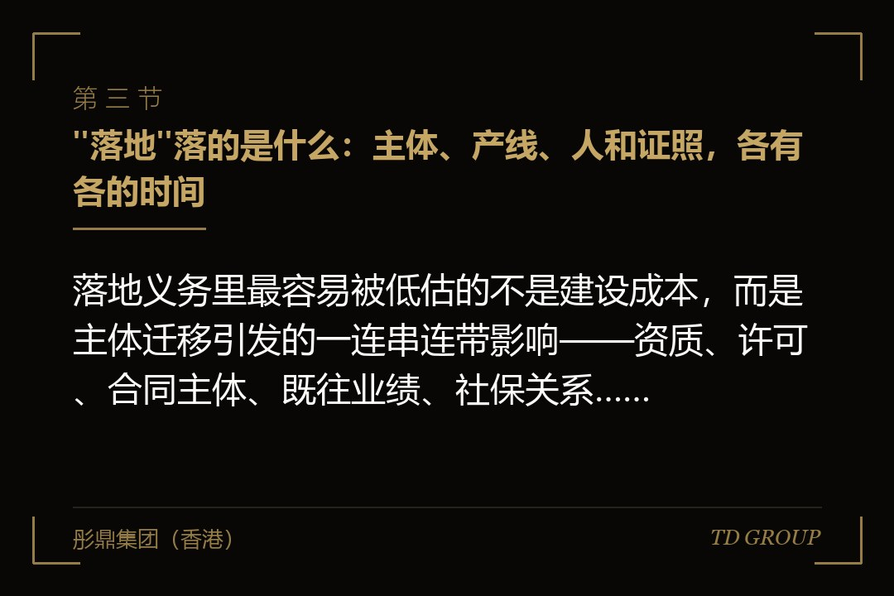

一、签的时候都说"这个不用太在意"，两年后按另一套口径算

结论先行：这类资金真正的风险不在条款有多严，而在于签字那一刻双方对同一条款的理解并不一致，而理解不一致的部分，两年后由对方按文本认定。一家做工业机器人系统集成的企业，两年前引入了一笔带引导性质的出资，金额在当时解了燃眉之急。协议里有一条返投条款，写的是企业应在约定期限内，使不低于所投金额若干倍的资金投向指定范围内的产业。创始人当时问过一句这条怎么算，对面的项目经理答得很轻松：你们本来就在这边采购、这边生产，做到这个数没有难度。
企业方就按这句话理解了：我在本地采购原材料、给本地供应商付货款、给员工发工资、交各项税费，这些钱都留在了这个范围里，累计早就超过了那个倍数。两年后到了考核节点，认定意见下来，认可的口径完全是另一套——只认对指定范围内新设或增资的股权投资、以及固定资产投入形成的实际支出，日常采购与人力成本一律不计入。按这套口径重新算，企业完成的比例连一半都不到。
后面发生的事很现实：企业方拿不出更多的现金去补这个缺口，只能和对方谈延期与分期；对方给出的方案是延长考核期，同时把未完成部分对应的一部分对价按协议约定的方式调整。这中间还有一笔隐性代价——为了应对认定，企业临时组建了资料团队，把两年里所有的采购合同、发票、付款凭证按新口径重新归集了一遍，前后耗了将近三个月，而这三个月正好压在企业筹备下一轮的窗口上。
这件事里没有人违约，也没有人使坏。项目经理当年那句话是他的真实理解，认定口径则来自出资人一侧的既有规则，两者本来就不是同一个层级的东西——项目经理能承诺的是他的推进意愿，不是认定标准。企业方犯的错只有一个：把一段口头解释，当成了对协议条款的解释。
所以本文要讲的东西可以先摆在这里：这类资金附带的每一项义务，都要在签字之前落到三个问题上——谁来认定、什么时点认定、按什么口径认定。这三个问题在协议里有答案，这笔钱就是可控的；只在会议室里有答案，那就是把定义权交给了对方。至于这笔钱本身贵不贵、稀释多少、估值怎么谈，那是所有股权融资的共同问题，本文不重复。
二、返投要谈的是认定口径，不是那个倍数

结论先行：企业方在返投这件事上几乎总是把注意力放错地方——盯着倍数高低反复砍价，却对"什么算返投"一字不改，而后者才决定这个倍数是轻松还是不可能。倍数是一个数字，口径是一套规则，规则不清楚的时候，任何数字都没有意义。
一家做实验室分析仪器的企业吃过这个亏。谈判时对方给的倍数并不算高，企业方觉得压力不大就签了。执行期里企业方确实往指定范围内投了一笔钱——用自有资金参股了一家做上游光学部件的公司，金额不小，主观上完全是奔着完成返投去的。
到认定时被退回来了，理由有两条：其一，被投企业的注册地虽然在范围内，但主要生产经营场所不在，按口径要看实际经营地而不是登记地；其二，该被投企业的实际控制人与本企业创始人存在亲属关系，属于关联方之间的资金往来，不计入返投口径。企业方对这两条一条都不认可，但协议里没有写清楚认定标准，最终只能接受对方的解释。
返投口径里真正需要在文本里问死的，通常是下面这几组。其一是范围口径：所谓"指定范围内"，是按被投企业的登记注册地算，还是按实际生产经营地、按纳税所在地、还是按项目实际落地位置算？这几个口径对一家跨区域经营的企业来说可能指向完全不同的结果。
其二是投向口径：什么形式的支出算数——只认股权投资，还是也认固定资产投入、研发支出、并购对价？日常经营性支出、采购、人力成本认不认？绝大多数争议出在这一格。
其三是主体口径：由谁投出去才算——只认本企业投的，还是本企业的子公司、创始人个人、创始人控制的其他主体投的也算？其四是时间口径：以合同签署日、款项实际支付日、还是工商变更完成日为准？跨考核期的分期支付怎么切分？
其五是关联方口径：投向关联方是否计入，"关联方"按什么标准判定。其六是折算与重复计算：同一笔资金在不同环节被使用，能不能重复计入；引入其他方共同出资的项目，本企业按出资比例计入还是按项目总额计入。
这几组问题的共同点是，它们在会议桌上都能得到一个让人放心的口头回答，而在两年后的认定表上，只认协议里那几行字。
所以正确的动作不是砍倍数，是在协议或其附件里，把上面这几组的每一组都写成一句可以照着执行的话，并且最稳妥的做法是附一个示例算法——用一笔假设的支出走一遍完整的认定流程，双方签字确认。这份东西通常不到两页纸，但它把"两年后由对方解释"变成了"两年后照着表算"。华尔街彤鼎俱乐部里做过这一步的企业主，事后复盘时提得最多的就是这两页纸。
还有一条常被忽略的：返投义务是不是可以转让、可以由第三方替代完成。企业在考核期内发生股权变动、被并购、或者主体重组时，这项义务跟着谁走，值得在签字前就有一个明确答案。因此在返投这件事上，企业方要争取的从来不是宽松，而是确定。
三、"落地"落的是什么：主体、产线、人和证照，各有各的时间

结论先行：落地义务里最容易被低估的不是建设成本，而是主体迁移引发的一连串连带影响——资质、许可、合同主体、既往业绩、社保关系，每一项都有自己的办理周期，而这些周期不会因为你签了协议就变快。一家做特种纤维材料的企业，为了配合出资方的落地要求，把经营主体从原所在地迁到了园区所在地，工商层面的手续本身办得很顺。真正的麻烦从后面开始。
其一是资质与许可。这家企业手上有一项生产许可和两项体系认证，主体地址一变，全部需要重新办理或者做变更登记，其中一项涉及现场核查，等排期就等了几个月。在这几个月里，企业不是不能生产，而是有几家对资质敏感的客户暂停了新订单，理由很简单：他们的供应商准入清单里挂的是旧主体和旧证书编号。
其二是合同主体。企业与上下游签的长期合同、与银行签的授信、与员工签的劳动合同，全部指向旧主体。迁移之后要么逐份签补充协议，要么走一次概括性的权利义务承继确认，前者工作量大，后者需要每一个相对方点头。这家企业有一百多份在执行的合同，光是把这件事推完就用掉半年，而其中两家大客户借着这个机会重新谈了付款账期。
其三是既往业绩的归属。企业过去投标时用的是旧主体的业绩、旧主体的纳税记录和社保缴纳记录。主体一动，有些招标方按其规则认定为新主体，此前积累的业绩不能直接使用。这一条对以工程与集采为主要销售渠道的企业尤其致命，因为它直接切断了当期的订单来源。
其四是人。产线要落地，就要有人到岗。企业原有的技术骨干未必愿意跟着走，本地重新招人则需要时间形成熟练度，而产能爬坡的进度又直接挂钩后面要讲的产值考核。这几件事是环环相扣的：人到位晚一个季度，产能爬坡晚一个季度，年度产值就差一截，而考核不会因此顺延。
所以在谈落地义务的时候，企业方要做的不是评估"建一条线要花多少钱"，而是画一张连带影响清单：把所有以主体名义持有的东西列出来——证照、资质、认证、知识产权、商标、域名与备案、银行账户与授信、税务事项、社保公积金账户、正在执行的合同、正在投标的项目、以及任何以主体名称对外公示的记录——逐项标注变更所需的周期与前置条件，把最长的那一项作为整个落地计划的关键路径。
这张清单做完之后，往往会发现协议里约定的完成期限并不现实，而这正是应当在签字之前而不是之后提出来的事。
另外一句要说明白的：落地未必等于整体迁移。很多情形下，用新设子公司承接特定业务、把某一条产线或某一类经营活动放进来，同样能满足对方的目标，而对既有主体的扰动小得多。这个方案往往需要企业方主动提出来，因为对方关心的是结果口径，未必在意路径。
四、产值与用工承诺：它按年度考核，而且考核的不是你的努力
结论先行：产值与用工承诺的性质，是把企业的经营计划变成了对第三方的约束性义务，而它的考核周期通常短于企业实际的成长周期。一家做宠物食品制造的企业签下的落地方案里，包含了分年度的产值目标与用工人数目标，写得很具体：每一年的产值达到某个量级，用工人数不低于某个数。签的时候创始人核算过，按当时的订单增速，这个目标是留了余量的。
问题出在第二个考核年度。行业进入了一轮明显的价格竞争，企业为了保住客户主动降了单价，销量其实是涨的，但按产值口径算的数没有涨；同期企业上了自动化设备，单位人工需求下降，用工人数不升反降。从经营角度看，这两件事都是正确决策——降价保住了客户，自动化提升了效率。从考核角度看，两项指标同时不达标。
这就是这类承诺最难的地方：它考核的是一个既定结果，而不是你的经营质量，更不是你尽没尽力。行业下行、客户结构调整、技术路线升级，这些在市场化投资人那里可以谈、可以解释、可以在下一轮定价里体现的事情，在一份按年度对表的考核里，只体现为一格"未完成"。
企业方能做的准备有这么几件。其一是把目标与口径同时锁定：产值按什么口径统计——是含税还是不含税、是本主体还是合并口径、是订单额还是确认收入、是当年生产还是当年销售？用工人数按什么时点统计——是年末在册、是全年平均、还是社保缴纳人数？
这几个口径的差别足以决定达标与否。其二是把不可抗与市场因素写进调整机制：约定在出现哪些客观情形时，指标可以按什么规则调整或者考核可以顺延，而不是笼统写一句"双方友好协商"。
其三是争取用组合指标替代单一指标：产值、税收、用工、研发投入、专利产出，允许在几项之间做一定程度的互补或者折算，比只盯一个数字要安全得多。其四是把分年度考核改为累计考核或者末期考核：把三个单独的年度关口合并成一次期末对表，能给企业留出跨年度调节的空间。
其五是明确统计资料的提供方式与争议解决路径：由谁出具、以哪一套数据为准、有异议时走什么程序。
需要说清楚的是，上面这些不是"想办法规避考核"，恰恰相反——它们是把一份笼统的承诺变成一份双方都能执行、都能验证的承诺。对出资人一侧来说，指标口径清楚、调整机制明确的方案，执行起来同样更省事，因为争议少。企业方在这件事上真正吃亏的时刻，从来不是指标定得高，而是指标定得含糊。
五、承诺做不到会怎样：补偿、回购，以及一条更长期的记录
结论先行：这类协议对未达标的处理，绝大多数不是重新协商，而是事先写好的一套后果条款，企业方必须在签字之前就把这套后果读一遍，并且按最坏的情形算一遍现金。一家做冷链物流装备的企业，把这一条读漏了。它的协议里对落地与产值承诺未达标的处理写了三层：头一层是分级补偿，按未完成的比例计算一笔款项；第二层是对价调整，未完成情形下出资方有权按约定方式重新确定持股比例；第三层是在连续两个考核期未完成、或者出现主体迁出等情形时，出资方有权要求企业或者创始人按约定价格受让其持有的股权。
企业方在签的时候关注的是头两层，觉得补偿金额可以承受、比例调整也谈得下来。真正出问题的是第三层：触发之后，创始人个人在这份文件上承担的是一项现金义务，而这项义务的规模，远大于他当年拿到手的那部分资金——因为受让价格是按出资额加上一个约定的资金占用成本计算的，与企业当时值多少钱无关。企业当期的现金流本来就紧张，这一条一旦被主张，就变成了一次紧急筹资。
这里要把一条边界划清楚，因为它常被混为一谈：本文讲的是这类资金特有的非财务承诺——落地、返投、产值与用工——它们考核的是行为和规模，触发条件是"这件事有没有做成"。
而以营业收入、净利润、上市时点为考核对象的业绩承诺条款，以及回购条款本身的条款写法（触发条件的设计、回购价格的计算方式、责任主体是公司还是创始人、行权期限与顺位安排），属于另一个题目，本文只把回购作为非财务承诺未达标的一种后果提到，不展开它的条款结构。
企业方需要知道的是：这两套东西经常出现在同一份文件里，而且可能相互引用——非财务承诺未达标，可以成为触发另一套条款的条件之一。所以读文件的时候，不能只读自己那一节，要把两套条款的触发关系画一遍。
除了钱之外，还有一层后果是企业方最容易忽略的：记录。这类资金的执行情况通常会进入出资人一侧的项目管理记录，未完成的事实会被留痕。
这个留痕在短期内可能没有任何直接影响，但企业将来再接触同类资金、申请各类支持事项、或者在后续融资与资本运作中需要出资方配合出具文件时，它会以某种方式出现在流程里。
因此，与其在触发之后争论，不如在执行期内主动沟通——大多数出资人一侧对"提前说明并提出可行调整方案"的容忍度，远高于对"到期才发现做不到"的容忍度。
给企业方的实际动作是：在签字之前，把后果条款按最坏情形做一次现金测算——假设各项承诺全部未完成，需要支付的补偿、需要让渡的比例、需要准备的受让资金各是多少，这笔钱从哪里来。如果这个数字大到企业和创始人都拿不出来，那么这一条就必须在签字之前改，而不是寄希望于它不会发生。这是本文最应该被记住的一句：附带义务的价格，不在你拿到钱的那一天体现，而在你做不到的那一天体现。
六、决策链条多出的那几段：时间表要按最慢的一段来排
结论先行：这类资金与市场化资金在时间上的差别，不是"慢一点"，而是多出了若干个企业方无法推动、也无法预判进度的环节，因此融资时间表必须按最慢的那一段来排，绝不能按乐观情形安排资金衔接。一家做工业软件的企业在这件事上摔得很重。它当时的现金只够撑几个月，谈的这笔出资在管理机构层面推进得相当顺利，投资经理明确表示项目质量没问题。创始人据此把时间表按"两个多月后到账"来安排，还谢绝了另一家条件稍差但推进更快的资金。
实际过程是这样的：管理机构自身的投决通过之后，项目要报出资人一侧履行立项与评审程序，这一段排队等了一段时间；评审提出了两点意见，需要企业补充材料并重新出具一份说明；材料补齐之后再上一次会；通过之后进入备案与内部审批环节，又是一段固定流程；期间还遇到了一次人员调整，负责该项目的经办人换了人，新经办人需要重新看一遍材料。
等到全部走完、资金实际到账，比创始人预估的时间晚了一个季度以上。这个季度里，企业为了发工资做了一次成本很高的短期周转，创始人个人还提供了担保。
关键在于：这几段里没有任何一段是不正常的。它们都是既有流程的组成部分，每一段都有它存在的理由，也都有一个大致的常规时长。真正的问题在于企业方把它们当成了"走个手续"，没有把它们排进时间表。
企业方应当在尽早的时候，把这条链条问清楚并画出来。可以直接问对面的投资经理这几件事：这笔出资从投决通过到实际到账，中间还要经过哪几个环节？每个环节由哪一层决定，常规需要多长时间？有没有固定的开会节奏，比如按月或者按季度集中审议？
我们这个项目最近的一次可能的上会时点是什么时候？如果这次没赶上，下一次是什么时候？哪些环节需要我们提供材料，材料清单能不能提前给？有没有哪一段是与其他事项排队共用通道的？这些问题问出来通常都能得到坦率的回答，因为对方也希望项目按流程顺利推进。
拿到这条链条之后，正确的做法有三条。其一，按最慢的情形安排现金：把预估时间乘以一个安全系数，并且假设中间会有一次补充材料的往返。其二，不要因为这笔资金推进顺利就关掉其他通道：在这笔钱实际到账之前，其他谈判一律保持在活跃状态，这不是不守信用，这是常识。
其三，把交割拆开：能不能分期到位，能不能约定一个先行到位的部分，能不能设一个明确的时间节点，超过之后双方各自解除约束。华尔街彤鼎俱乐部里对这一点的共识很清楚：融资谈判里最贵的错误，从来不是估值谈低了，而是按对方的乐观时间表安排了自己的现金。
顺带一提，桥接资金怎么设计、跑道还剩多久该启动下一轮，是另外的题目，此处不展开。
七、签之前必须问清的几件事
结论先行：这类资金完全可以拿，很多情形下它还是企业在特定阶段最合适的资金来源；决定成败的不是拿不拿，而是签字之前有没有把附带义务逐条落到文本上。一家做半导体封装材料的企业提供了一个正面的对照。它同时接触了几家不同背景的资金，其中两家带有引导性质，各自的要求并不相同：一家要求经营主体落在其指定范围内，另一家要求把新增产能放在另一处；两家的返投口径也不一样，一家只认股权投资，另一家把固定资产投入也计入。
如果照单全收，这两套义务在物理上就是打架的——同一条产能不可能同时落在两个地方。
这家企业的处理方式是，在谈判早期就把两份条件清单并排列出来，逐条标注冲突项与可兼容项，然后拿着这张表分别去谈：对一方提出以新设子公司承接特定业务的方案，对另一方提出把返投口径统一到双方都接受的一套定义上。
最终的结果是一方调整了落地方式，另一方接受了口径的统一表述，两笔资金得以并存。这件事之所以能谈成，靠的不是谈判技巧，而是企业方比任何一方都更早看清了全局。
把这件事收成一份可以照着做的清单，签字之前至少要有以下答案。其一，这笔钱的出资人一侧到底有哪几层，最终的决定权在哪一层，我今天在跟哪一层说话。
其二，附带义务一共有几项，分别写在主协议、补充协议还是另行签署的合作文件里——很多义务并不在股权协议里，而在一份单独签的合作文件中，两份文件的效力关系要问清楚。
其三，每一项义务的认定口径是什么，有没有可以照着算的示例；口径将来会不会变，如果依据的规则发生调整，按签署时的规则还是按认定时的规则执行。其四，认定由谁做、在什么时点做、企业方有没有陈述与申辩的机会、有异议走什么程序。
其五，未达标的后果有几层，每一层的触发条件是什么，按最坏情形需要准备多少现金，责任主体是公司还是创始人个人，创始人个人承担的部分能不能设上限或者剔除。其六，义务的存续期有多长，什么情形下解除；企业发生股权变动、并购或者重组时，义务由谁承继。
其七，这位股东进来之后的日常约束是什么——报送什么数据、什么频率、哪些事项需要事前同意；将来其他股东要转让股权、企业要做股权激励、要引入新一轮资金时，需要履行哪些程序、耗时多久。
其八，退出安排是什么，什么时候可以退、按什么方式退、需要经过哪些程序，这一条会直接影响企业后续的资本安排节奏。其九，如果企业将来考虑更进一步的资本市场路径，这位股东的存在需要提前处理哪些事项——这一条不必在今天答完，但要在今天问出来。
需要补充说明两点边界。产业方与财务投资人各自看重什么、条款上有哪些差别，是另一个题目，本文不展开；境外资金进入以及相关的境外投资备案事项，也不在本文范围内。本文只讲一件事：这笔钱后面跟着的那组非财务义务，怎么在签字之前变成可执行、可验证、可测算的文本。
彤鼎集团（香港）有限公司在这类事情上承担的是统筹与陪同角色：与企业方一起把附带义务清单、认定口径的示例算法、主体迁移的连带影响清单、承诺未达标的现金测算，以及决策链条的时间表做一遍完整梳理，并在与出资方接触的各个节点上，帮助企业判断哪些条款必须改、哪些可以接受、哪些应当换一种实现方式提出来。
涉及审计、法律意见、资产评估等持牌业务的，一律由具备相应资质的合作机构承做。华尔街彤鼎俱乐部里关于这类资金的讨论，绝大多数集中在口径与时间表这两件事上，而不是价格。
因此，在坐上谈判桌之前，值得先花两天做完这几件事：把对方给的全部文件按"义务"和"权利"两栏拆开重排一遍、把每一项义务后面补上认定口径与认定主体、把所有以主体名义持有的证照合同列成一张连带影响清单、把最坏情形下需要的现金算成一个数字、把决策链条画成一条带时间的线并按最慢的一段安排自己的资金衔接。
以上均为市场经验性表述，各地做法与具体条款并不一致，实际效果受行业、项目结构与出资方类型影响，以实际协议文本为准，不构成固定标准。本质上，这类资金从来不是"更便宜的钱"，它是一笔用非财务承诺换来的钱——而承诺的价格，只有在你做不到的那一天才会被真正报出来。